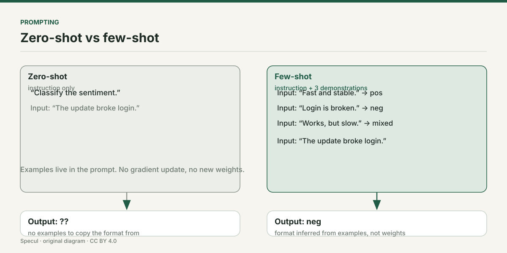

零样本与少样本Zero-shot and Few-shot
Zero-shot and Few-shot
解决什么问题What problem it solves
不训练或只给几个例子，让模型直接完成新任务。Get a model to perform a new task without training, or with only a few examples.
这是什么What it is
零样本是只用任务说明提问；少样本是在提示里放几组输入输出示例。
GPT-3 论文用「不做梯度更新、只靠文本交互」的方式验证了这条路线。
Zero-shot prompts with a task description only; few-shot puts a few input-output examples into the prompt.
The GPT-3 paper tested this route with no gradient updates and text-only interaction.

为什么需要知道Why it matters
这是判断一个模型能不能快速试用的基本方法；示例的选择与顺序会明显影响结果，少样本不等于稳定。It is the basic way to judge whether a model can be tried quickly. Example choice and order matter a lot, and few-shot is not the same as stable.
别名Chinese aliases
zero-shot · few-shot · 零样本 · 少样本
同域词条Terms in the same area
现在能做什么What you can do now
回到名词地图看第3站的其他 68 个词 →Back to the map: the other 68 terms in station 3 →